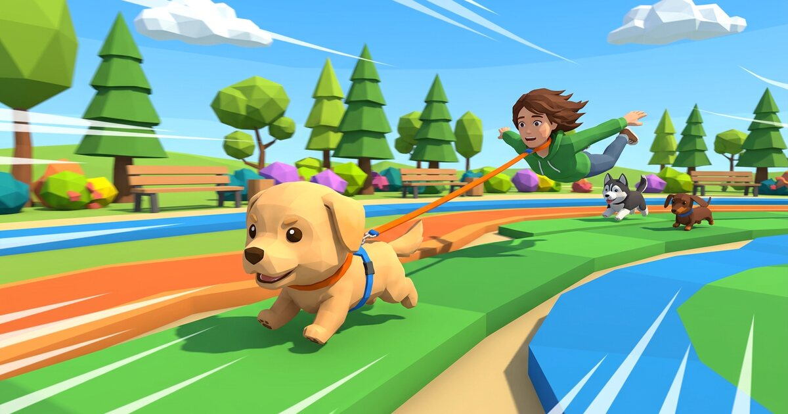
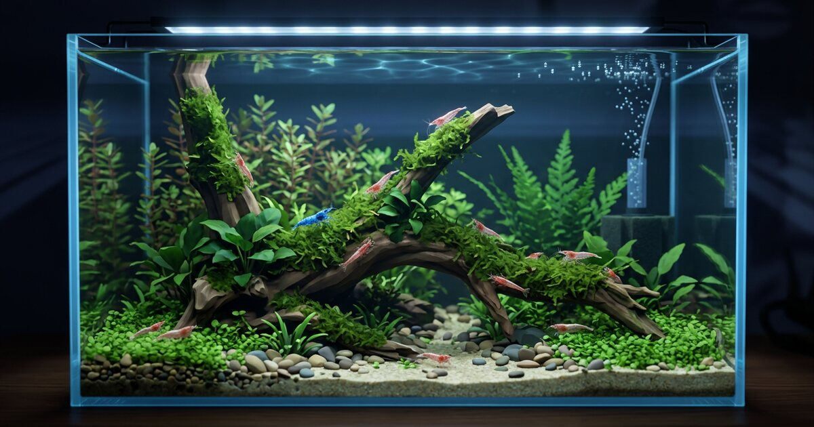
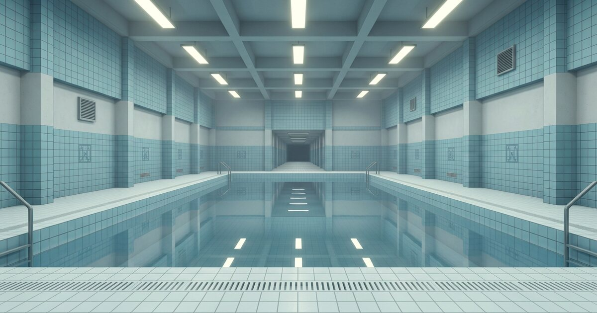
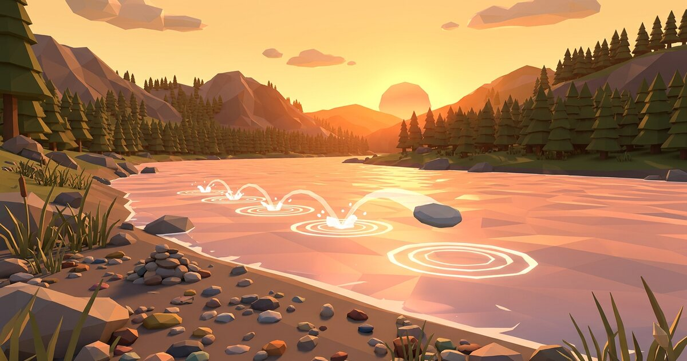
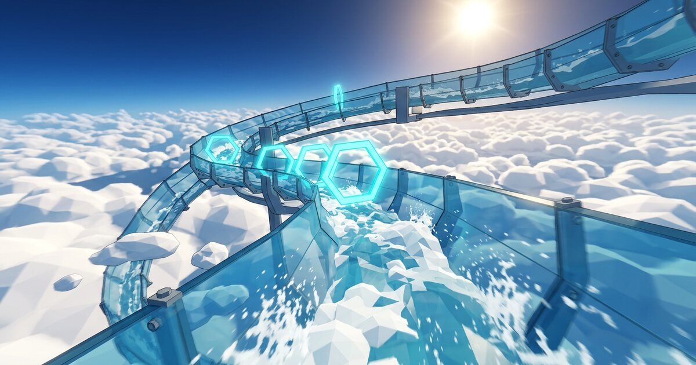

JUEGOS 3D GRATIS EN EL NAVEGADOR — IMPULSADOS POR WEBGL
GALERÍA DE
JUEGOS 3D
JUEGOS THREE.JS PARA NAVEGADOR
Bienvenido al salón recreativo de juegos 3D gratuitos para navegador hechos con Three.js.
Sin instalar nada. En el móvil o en el PC: abre el enlace y empieza a jugar.
DESPLÁZATE
JUEGO 01 CARRERAS 3D
GUAU PRIXGran Premio del Paseo
Juego de carreras 3D en el que unos cachorros cabezones corren a toda velocidad arrastrando a sus dueños. 4 razas × 6 circuitos × 3 niveles de dificultad. Basta con enviar la URL de invitación para competir en línea con 2 a 4 amigos.
- MOTOR
- Three.js r128 (WebGL)
- JUGADORES
- 1 jugador ~ 4 en línea
Jugar→

JUEGO 02 VUELO 3D
AEROPALOMAVuelo 3D de una paloma rechoncha
Conviértete en una paloma regordeta y adorable y surca el cielo en esta colección de juegos de vuelo. Cuatro modos: «Reparto» para entregar paquetes, «Caza» para derribar drones, «Defensa» para proteger la ciudad desde una torreta y «Paseo aéreo» para volar libremente por una isla donde el tiempo pasa.
- MOTOR
- Three.js r185 (ES Modules)
- JUGADORES
- 1 jugador · 4 modos
Jugar→

JUEGO 03 ECOSISTEMA 3D
GAMBARIOSimulador de acuario de gambas
Simplemente contempla un acuario de gambas. Mientras das de comer y cambias el agua, verás en 3D cómo crece un pequeño ecosistema: hembras ovadas, eclosiones, mudas, genética y cambios en la calidad del agua. Recomendado de noche, con la habitación a oscuras.
- MOTOR
- Three.js r185 (ES Modules)
- JUGADORES
- 1 jugador · se puede dejar en reposo
Jugar→

JUEGO 04 FOTOPASEO 3D
DERIVAPaseo fotográfico por espacios liminales
Caminar y fotografiar los huecos de un mundo en el que no hay nadie. Un paseo 3D con cámara, como homenaje a la cultura de los espacios liminales. No hay objetivo ni puntuación. Solo lugares que te resultan familiares sin haber estado nunca en ellos.
- MOTOR
- Three.js r128 (WebGL)
- JUGADORES
- 1 jugador · con modo foto
Caminar→

JUEGO 05 CABRILLAS 3D
CANTO RODADOHaz cabrillas en el río
Elige una piedra en la orilla, ajusta la fuerza y el ángulo, y lánzala. Cuenta cuántas veces rebota sobre el agua: no hay más. Tres modos: libre para batir tu récord, dianas y el desafío del día. Disfruta de la ribera low-poly y del brillo del agua.
- MOTOR
- Three.js r128 (WebGL)
- JUGADORES
- 1 jugador · 3 modos
Lanzar→

JUEGO 06 TOBOGÁN 3D
VÉRTIGOTobogán acuático entre las nubes
Baja a toda velocidad, en primera persona, por un canal de cristal suspendido sobre las nubes. Dos modos para dominar las curvas y los anillos de aceleración, más un modo de práctica en el que no puedes caerte. Para quienes no temen a las alturas… y para quienes sí.
- MOTOR
- Three.js r185 (ES Modules)
- JUGADORES
- 1 jugador · 3 modos
Deslizarse→

¿Qué son los juegos Three.js?
Three.js es una biblioteca de JavaScript para dibujar gráficos 3D en el navegador. Permite construir escenas 3D con muchísimo menos código que escribiendo WebGL directamente, y se usa en webs interactivas y juegos 3D de todo el mundo. Es software libre con licencia MIT.
Los juegos de navegador hechos con Three.js tienen una ligereza que las apps no tienen. No hay que instalar ni registrarse: el mundo 3D arranca en cuanto se abre la URL. Se juega con el mismo enlace en el móvil y en el PC, y compartirlo con amigos es cuestión de una sola dirección. Esta misma página también está dibujada con Three.js r185.
Todo el código de esta galería (las máquinas recreativas, el recorrido de cámara, el neón y el resplandor) está publicado en GitHub. Si al verla piensas «yo también quiero hacer algo así», es un buen punto de partida.
- JUEGOS
- 6 títulos (todos gratis y 100 % en el navegador)
- COMPATIBLE
- Navegadores principales de móvil, tablet y PC
- CREADO POR
- JUEGOS 3D (Desengany)
Preguntas frecuentes
¿Los juegos de Three.js son gratis?
Sí. Todos los juegos de esta página son gratuitos. No hace falta crear una cuenta ni instalar ninguna app: basta con abrir el enlace para empezar a jugar.
¿Funcionan en el móvil?
Sí. Three.js dibuja el 3D en el navegador mediante WebGL, así que en iPhone y Android se juega con la misma URL que en el PC. Todos los juegos admiten controles táctiles.
¿Se añadirán juegos nuevos?
Sí. Ahora mismo hay varios juegos Three.js en desarrollo. En cuanto se publiquen aparecerán en esta galería.
Quiero aprender a crear juegos con Three.js.
Lo mejor es entender primero la estructura básica (escena, cámara y renderizador) y empezar por pequeños efectos antes de un juego completo. La documentación oficial de Three.js y sus ejemplos son un excelente punto de partida, y el código de esta galería también está publicado en GitHub.